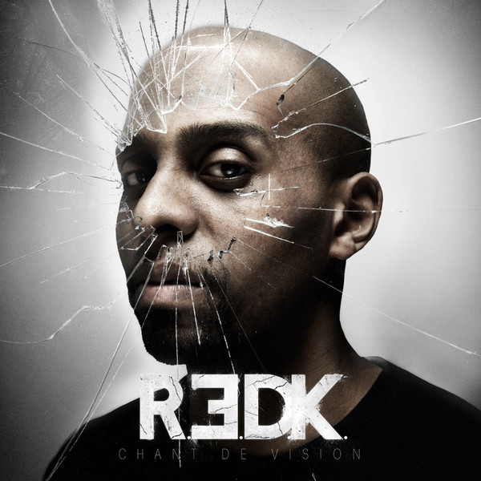
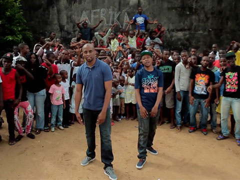
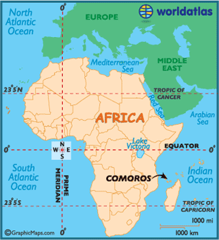

AFRIKA
Soprano + R.E.D.K
Album: E=2MC's
le 20 mars, 2012
Video + Résume
SOPRANO & R.E.D.K.- AFRICA [CLIP OFFICIEL]
- Culture Africaine
- R.E.DK était née en Comores
- Soprano était née en Marseilles
- Les deux ont des parents comoriennes
- “Beaucoup trop loin sont mes Comores donc tu connais ma tristesse” “Yes, j’suis francais et fière de l’être”
- “Marseillais d’pure souche, sha mdji wa hangu Iconi” (Marseillais d’pure souche, mais mon village natal est Iconi)
- La langue comorienne
Champ Lexical

Plutôt positif.
| Positif | Negatif |
|---|---|
|
|
Analyse Technique + Figures de style
Analyse Technique
- Rimes plâtes + pour l'oreille
- La sonorité: “Comment éviter, toute cette pauvreté que leur humilité essaye sans cesse de cacher”
- “J’ai la peau couleur pétrole donc tu connais ma richesse/ Beaucoup trop loin sont mes Comores donc tu connais ma tristesse”
- 7 strophes
Figures de style
- L'imagerie:
- “Le visage de mon grand-père, les mariages au village"
- "Sache que je n’peux oublier l’odeur du poisson grillé”
- “Puis sur un champ on trouvait des cannes à sucre à macher”
- L'anaphore:
- “Afrika, gravé dans ma peau…/Afrika, malgré tes apparences…”
- La métaphore:
- “Même si j’ai poussé loin de la terre de mes ancêtres/Dis-toi bien que mon archipel, c’est la racine de mon être”
- "Je vois des cicatrices, des plaies dans tous les domaines"
- "Afrika, tes atouts sont tes faiblesses"
- L'oxymore:
- "J'cotoie la richesse des coeurs et les sourires de la pauvreté"
- L'antithèse:
- "Afrika, tes atouts sont tes faiblesses, tes richesses t'ont appauvri"
- La personnification:
- "Comment éviter, toute cette pauvreté que leur humilité essaye sans cesse de cacher"
- "Afrika est une reine et j'suis là pour la couronner"
La Négritude

Circonstances
- Album commun entre Soprano et R.E.D.K
- Soprano - née en Marseille, famille comorienne
- "Beaucoup trop loin sont mes Comores donc tu connais ma tristesse
Ton de la chanson
- Vif
- Pragmatique
- “Afrika, malgré les apparences, t’es présent dans mes pensées”

But
- Valoriser la culture africaine
- Reconnecter avec leur culture
- “Je suis l'résultat des sacrifices de mes parents J’me dois de réussir pour que leurs larmes n’aient pas coulées pour rien J'vis le rêve africain, et je me dois de l’honorer”
Traits de la Négritude
- Redonner le pouvoir aux noirs
- Le Comores était colonisé en environ l'année 1840
Connexions avec les textes étudiés
- Prière aux Masques
- “Et pas toi le dernier, Ancêtre à tête de lion”
- “Dans ma tête, des images refont surface Le visage de mon grand-père, les mariages au village Sache que je n’peux oublier l’odeur du poisson grillé”
- “Nous sommes les hommes de la danse, dont les pieds reprennent vigueur en frappant le sol dur.”
- “J'vis le rêve africain, et je me dois de l’honorer Afrika est une reine et j'suis là pour la couronner”
Connexions personelles
Ma mère jamaicaine
Mon père trinidadien
Conclusion + Pourquoi j'ai le choisi
Ma mère jamaicaine
Mon père trinidadien